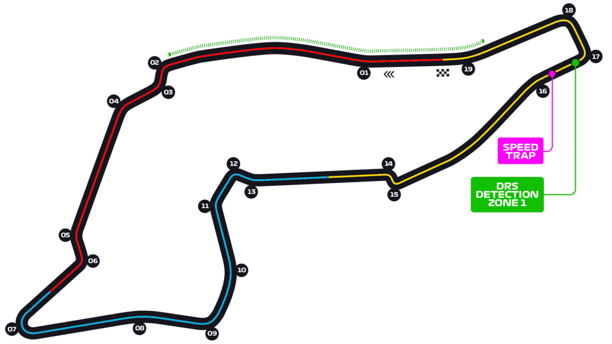
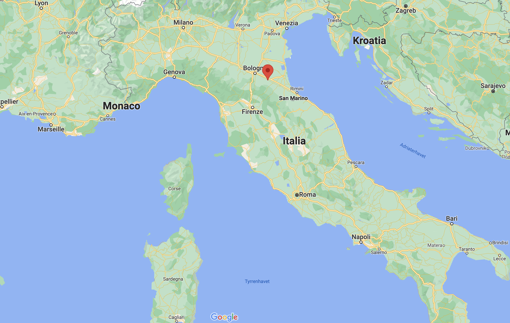
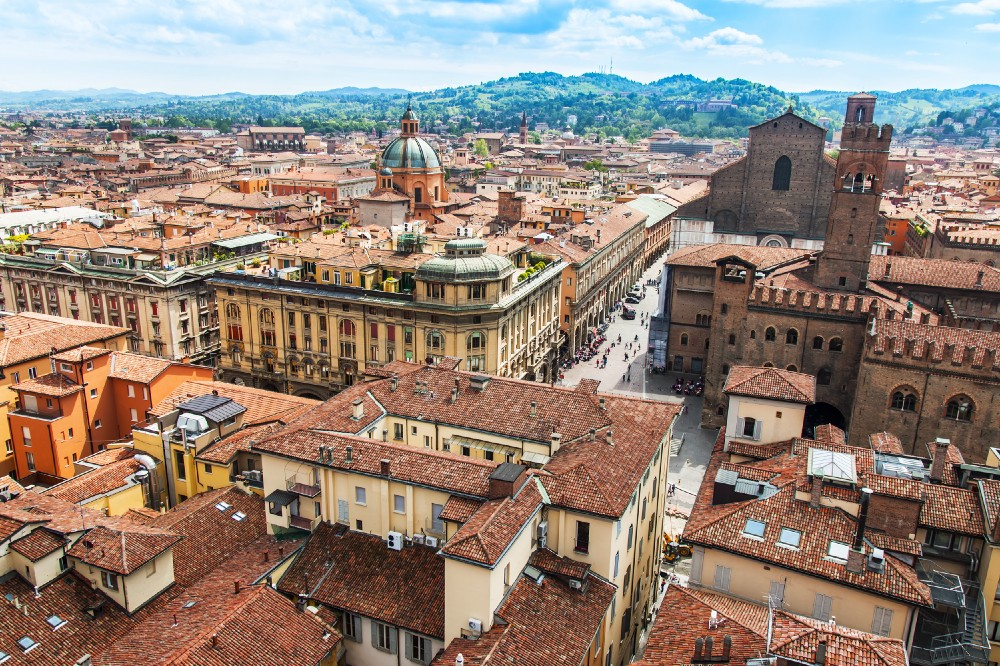
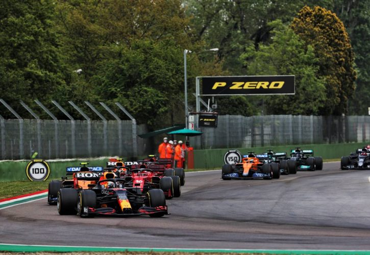

Autodromo Internazionale Enzo e Dino Ferrari




Banen, Autodromo Internazionale Enzo e Dino Ferrari, i Imola er en av verdens mest kjente racerbaner. Den er kjent for sine kjappe og smale "chicaner" og, nå i nyere tid, sine vanskelige forbikjøringsmuligheter. Imola er også den banen hvor formel 1 legenden Ayrton Senna krasjet i 1994 som endte med hans død. Etter store renoveringer på banen siden det siste racet i 2006 var formel 1 tilbake i 2020 og slik det ser ut nå skal banen blir på kalenderen hvertfal frem til 2025.

Løpet 18. april bydde på spenning fra start. Kjøreforholdene var vanskelige fra start med småregn i lufta noe som førte til flere kollisjoner. Den første så vi på første runden da Lewis Hamilton og Max Verstappen kjempet om ledelsen. Vi så blant annet Lewis Hamilton i grusfella for første gang på lenge og en svær kollisjon mellom Valtteri Bottas og George Russell som førte til rødt flagg. Løpet endte med seier til Verstappen og Lando Norris fikk sin første pallplassering for sesongen.

Fun Facts:
F1 har kjørt løp på Imola 28 ganger, det første i 1981, det siste i 2021.
Banen har 20 svinger og er 4,9 kilometer lang.
Kjappeste rundet kjørt i et race er på 1:15,484 minutter av Lewis Hamilton i 2020

